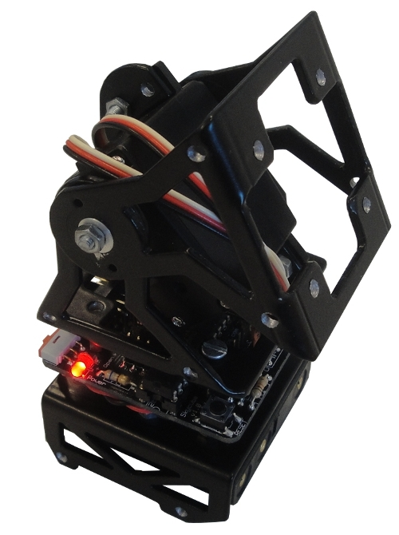
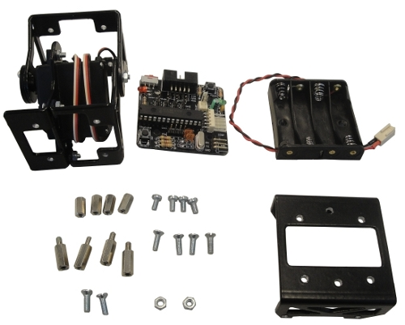

Ya está terminada la documentación del montaje de UNIMOD A1. Unimod es el robot modular mínimo formado por un módulo + skycube + pilas. Tiene la propiedad de poder oscilar de manera autónoma.
A partir de un Unimod se pueden construir robots modulares más largos, tanto del grupo cabeceo-cabeceo como cabeceo-viraje, mediante la unión de más módulos o bien de otros Unimods.
Aquí se muestran las piezas necesarias para el montaje de Unimod A1:

* Un módulo MY1
* Una tarjeta Skycube
* Un portapilas
* Una pieza D
* 4 separadores macho-hembra de 12mm y M3
* 4 separadores hembra-hembra de 10mm y M3
* 8 tornillos de M3, entre 5 y 8 mm de largo
* 2 tornillos M3 de cabeza plana
* 2 tuercas M3